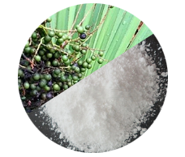
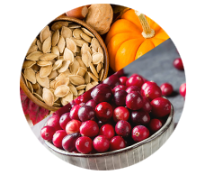

-

100% Organik
Sicher! -
Die Wirksamkeit ist von 98%
Männer bestätigt! -

2765 der Männer wurden schon
gesund
Revolution in der Behandlung der chronischen Prostatitis
20 TAUSEND Männer in Europa haben schon über den Schmerz und die Probleme der Harnentleerung vergessen
-
SCHRITT 1
Schmerz, Grimmen, Brennen in der Leiste und Lende verschwinden
-
SCHRITT 2
Harnentleerung wird stabil, nicht häufig, entfernt die Entzündung
-
SCHRITT 3
regeneriert sich die Erektion, der Körper befestigt sich, Prostatitis kehrt nicht zurück
PRÜF DICH! ERSTE VORLÄUFER DER PROSTATITIS:
-

Einmal im Jahr/ein halbes Jahr spüren Sie das Ziehen im Gebiet der Leiste
-

Manchmal fühlen Sie Prickeln, Druck im Damm
-

Sie bemerken, dass Sie häufiger auf die Toilette müssen
-

Sie bemerken, dass ein Hoden niedriger hängt
-

Von Zeit zu Zeit leiden Sie an Verstopfung oder Durchfall
-

Sie sehen, dass die Erektion schwächer wird
-

Sexualtrieb wurde abgebaut
-

Wenigstens einmal fühlten Sie die Komplikationen mit der Harnentleerung
FALLS SIE WENIGSTENS 1 SYMPTOM BEMERKEN, BEGINNEN SIE SOFORT DIE BEHANDLUNG!
Der Schmerz quält Sie. Prostatitis stört Sie. Es kann Ihnen noch schlechter in den nächsten 1 - 2 Jahre werden. Infertilität. Blut bei der Ejakulation und Harnentleerung. Urinstau in der Blase (bis 500 ml). Vesikulitis.
-

IMPOTENZ
Unheilbare Mannesschwäche
-

ADENOM DER PROSTATA
Gewebsvermehrung der Prostata, Bildung des Tumors und “der Knoten”
-

ONKOLOGIE
Bösartiger Tumor, die häufigste Ursache des Todes der Männer
BEGINNEN SIE DIE BEHANDLUNG JETZT UND WERDEN SIE GANZ GESUND!
WIRKSAMES MITTEL AUF WACHT DER MÄNNERGESUNDHEIT!
-

Ohne demütigende Massage
-

Ohne teuere Tabletten und Impfungen
-

Ohne chirurgische Operation
-

Ohne teuere Diagnostik
-

Klinisch geprüfte Wirksamkeit 98% der ausgeheilten Patienten
-

Gilt als das wirksamste Präparat für die Männer im Alter 40+
-

Genehmigt durch Europäischen Ärzteverband
-

Hochentwickelte Technologien und 100% ökologisch verträgliche Komponenten ohne Chemie

-

Palmfruchtextrakt und Zink
BESEITIGT DIE Vergrößerung DER VORSTEHERDRÜSE, VERFÜGT ÜBER DIE IMMUNSTIMULIERENDE WIRKUNG
-

Kürbiskernpulver und roter Heidelbeerextrakt
VERRINGERT DIE SCHWELLUNG UND DIE ENTZÜNDUNG DER PROSTATA, BEUGT DIE BILDUNG VOM TUMORGEWEBE VOR
-
Gotu Kola-Extrakt und Shitake-Pilz-Pulver
BESEITIGT DEN AUFSTAU IM HARNSYSTEM, REGENERIEREN DIE FUNKTION DER VORSTEHERDRÜSE
ART DER ANWENDUNG
- Kapsel: 1 Kapsel pro Tag 30 Min vor einer Mahlzeit innerlich einnehmen.
- Kurs – 1,5 bis 3 Monate. Bei Bedarf nach 1 Monat kann der Kurs wiederholt werden.
FACHURTEIL

Prostamin Forte erleichtert die Arbeit “der kostenlosen Doktoren”. ich sehe meine Patienten 2 mal. Erstens, als sie für Diagnostik kommen und zweitens, als sie in einem Monat sagen “Vielen Dank, ich bin gesund!”. Und die teuere Kliniken haben Pech, Prostamin Forte stört ihnen die einfachen Menschen abzukassieren.
Gerald Graser
Dr. med. Professor, Facharzt für Andrologie und Sexologie. Ludwig-Maximilians-Universität München Berufspraxis 23 Jahre

Die Zusammensetzung von Prostamin Forte spricht für sich. Das ist ein absolut sicheres Mittel für die Männer der älteren Generation. Dank einzigartiger Formel und Konzentration der aktiven Komponenten, der Vitamine entfernt die Entzündung, regeneriert die Erektion, Prostatitis kehrt nicht zurück. Der Männerkörper arbeitet wie schweizerische Uhr.
Karl Böhmer
Leitender Facharzt für Andrologie, Arzt der höchsten Qualifikationsstufe. Ruprecht-Karls-Universität Heidelberg Berufspraxis 19 Jahre
KLINISCH GEPRÜFTE WIRKSAMKEIT
ERGEBNIS STUDIEN
APOTHEKARISCHES PRÄPARAT GEGEN PROSTATITIS
-
56%Abbau von den Schmerzempfindungen, Grimmen und Brennen
-
57%Normalisierung der Harnentleerung
-
28%Abbau der Harndränge bis Norm
-
9%Veränderung der Größen der Prostata bis Norm
-
35%Das Fehlen der Durchbrüche der Krankheit nach der Absetzung des Präparats
Prostamin Forte
-
100%Abbau von den Schmerzempfindungen, Grimmen und Brennen
-
97%Normalisierung der Harnentleerung
-
98%Abbau der Harndränge bis Norm
-
89%Veränderung der Größen der Prostata bis Norm
-
98%Das Fehlen der Durchbrüche der Krankheit nach der Absetzung des Präparats
VORTEILE VON Prostamin Forte
-

SCHNELLE HILFE
Schmerzsymptome verschwinden während der ersten Woche
-

HYPOALLERGENES PRODUKT
Im Unterschied zu den Antibiotika und Salben für die Männer
-
WIRKSAME WIRKUNG OHNE NEBENEFFEKTE
Hochentwickelte Technologien ermöglichen es das kristallklare reine beimischungsfreie Konzentrat der heilsamen Pflanzen zu bekommen
-

KOMPLEXE GENESUNG
Intensive Wirkung auf die Gewebe der Prostata, allgemein kräftigende Wirkung. Es gibt mehr Kräfte, Energie, die gefestigte Libido, ausgezeichnete Potenz
VORSICHT FÄLSCHUNG
Mit dem Anstieg der Popularität Prostamin Forte wurden die Fälle der Fälschungen zum Schleuderpreis häufiger. Nur hier können Sie das originelle Produkt mit Rabatt 50% kaufen.
-
Machen Sie die momentane Bestellung und bekommen Sie 50% Rabatt
-

Warten Sie auf den Ruf des Operators für die Präzisierung der Details
-

Ohne Risiko! Bekommen Sie die Sendung und bezahlen Sie per Post
WIR BEKOMMEN DIE BESTELLUNGEN EUROPAWEIT
-
100% Organik
Sicher! -
Die Wirksamkeit ist von 98%
Männer bestätigt! -
2765 der Männer wurden schon
gesund
Revolution in der Behandlung der chronischen Prostatitis
20 Tausende der Männer in Europa haben schon über den Schmerz und die Probleme der Harnentleerung vergessen
-
SCHRITT 1
Schmerz, Grimmen, Brennen in der Leiste und Lende verschwinden
-
SCHRITT 2
Harnentleerung wird stabil, nicht häufig, entfernt die Entzündung
-
SCHRITT 3
regeneriert sich die Erektion, der Körper befestigt sich, Prostatitis kehrt nicht zurück
BEWERTUNGEN DER MÄNNER, DIE DIE PROSTATITIS GESIEGT HABEN
Dich stellte mich vor voller Ekel. Ich dachte, man wird die Massage der Prostata machen. Der Arzt sagte, dass ich soll mir keine Sorge machen, falls ich jetzt heilen werde. Er schrieb Prostamin Forte vor. Nach 3 Monaten fühle ich mich ausgezeichnet!
I.S., Freiburg in Breisgau
Die Schmerzen waren so, dass ich über Sex mit junger Frau nicht denken konnte. Ich litt. Sie brachte mir Prostamin Forte. Nach einem Monat konnte man mich nicht erkennen. Gesund wie ein Bär. Die Schmerzen sind verschwunden, auf die Toilette gehe ich wie ein normaler Mensch. Sex wurde besser.
B****t, Ulm
Ziehende Schmerzen im Leisten und Hodensack. Die Vergrößerung, die Entzündung. Diagnose “Prostatitis”. Vorbereitung zur Operation. Aber als ich in München war, besuchte ich LMU. Untersuchung. Man verschrieb Prostamin Forte. Nach einem Monat war alles plötzlich wie abgefallen. Alles in Ordnung, nichts schmerzt, nichts sticht.
****, Altastenberg
Bestellen, weil es noch preiswertig ist